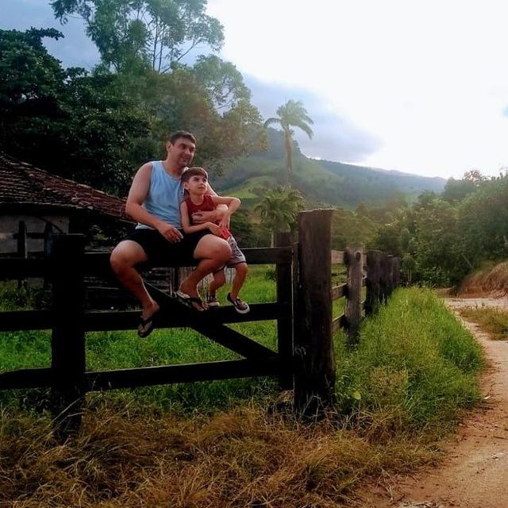

Jheimys Bezerra Bassani
Professor
Contato
Currículo Lattes
Olá! sou Jheimys, Mestre em Educação Matemática pela Universidade Federal do Espírito Santo (2019), Especialista em Tecnologias Educacionais (2013), graduado em Matemática pela Universidade Federal do Espírito Santo (2012). Atualmente é professor a - Marista Champagnat de Terra Vermalha. Tem experiência na área de Educação, com ênfase em Educação. Graduando em Sistemas de informação.
Formação acadêmica/titulação
-
Mestrado profissional em Profissional em Educação.
Universidade Federal do Espírito Santo, UFES, Brasil.
Título: Resolução de Problemas aplicado a Análise Combinatória, Ano de Obtenção: 2019.
Orientador: Moacir Rosa Filho.
Grande área: Ciências Exatas
-
Especialização em TECNOLOGIA EDUCACIONAL. (Carga Horária: 360h).
Instituto Superior de Educação e Cultura Ulysses Boyd, ISECUB, Brasil.
Título: NOVAS TECNOLOGIAS EDUCACIONAIS: MÉTODOS DE ENSINO INOVADORES.
Orientador: Frederico André Gonçalves Feital.
-
Graduação em Abi - Matemática.
Universidade Federal do Espírito Santo, UFES, Brasil.
-
Graduação em andamento em Sistemas de Informação.
FACULDADE ESTÁCIO DE SÁ, FES, Brasil.